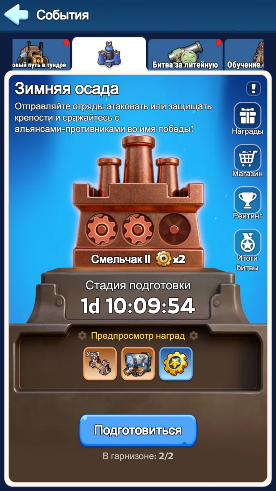
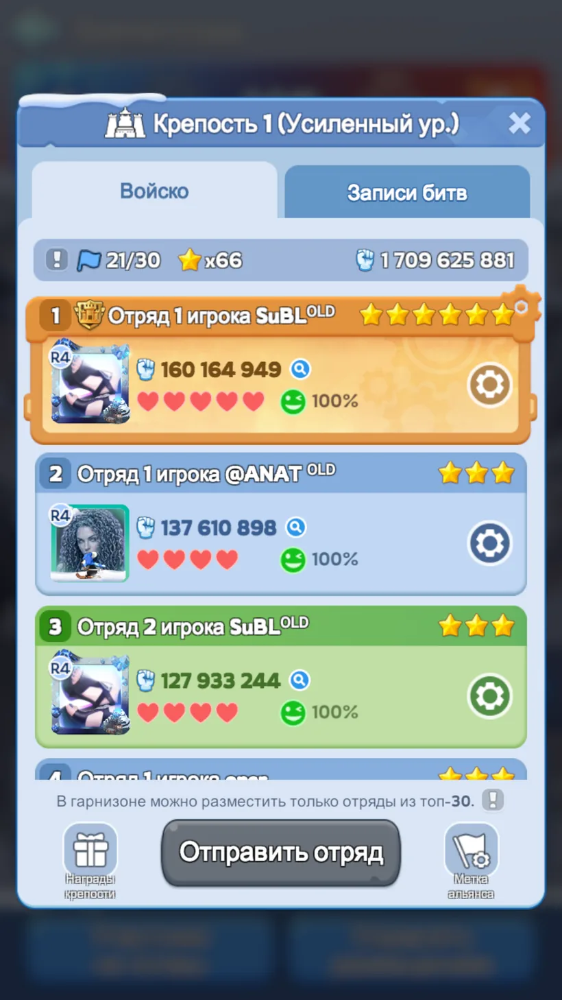
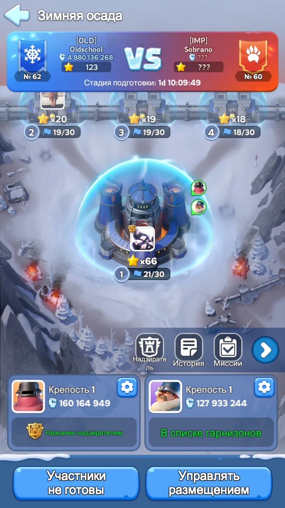

0. Простая инструкция каждому
Не «сильный + остатки». Оба отряда потом отдельно защищаются и отдельно атакуют.
Пехота / копейщики / стрелки. Это рабочая отправная точка, дальше корректируем только по отчётам.
Герои, их навыки, снаряжение и боевые бонусы фиксируются после подготовки. Специально тратить накопления ради Осады не нужно — основной запас бережём на СвС.
В событии используются системные войска твоего открытого уровня. Реальные войска города не умирают.
В доступной крепости можно выбрать конкретного защитника. Бьём того, кого обозначили R4/R5, а не самого удобного соперника.
У каждого отряда до 10 атак за день. Даже если твой гарнизон уже выбит, атаковать всё равно можно.
Береги основной отряд для момента, когда нужному защитнику уже просадили мораль. Его задача — выиграть бой и снять сердце.
Если цель слишком сильна для прямой победы, второй отряд отправляем в неё первым. Даже поражение полезно, если оно ослабляет защитника для добивания.
Простая схема: второй отряд ломает сильную цель → первый отряд добивает. Если конкретный бой требует другой очередности, следуем команде R4/R5.
1. Как устроена Зимняя осада
«Зимняя осада» — ежемесячное событие альянс против альянса. На поле у каждой стороны четыре крепости. Каждый игрок готовит два отдельных отряда, размещает их в своих крепостях, а в субботу этими же отрядами атакует гарнизоны соперника.
Для участия альянс должен входить в топ-20 государства по мощи, а игроку нужен минимум 25-й уровень Топки. Событие стартует раз в месяц на неделе «Сражения альянсов».

Звёзды, сердца и мораль
Отряд приносит звёзды своей крепости. Они исчезают только после полного выбивания этого отряда из защиты.
Обычный отряд имеет 4 сердца, Надзиратель — 5. Победа атакующего снимает одно сердце.
Защитник начинает с 100%. Его боевые характеристики умножаются на текущую мораль.
Это ключевая механика Осады: сняли одно сердце — не считайте, что противник остался ослабленным. Для следующего сердца сильную цель обычно приходится снова просаживать по морали с самого начала.

В усиленной крепости стоят 21 отряд: 20 обычных × 3 звезды + Надзиратель × 6 = 66. Поэтому усиленную крепость нельзя бездумно отдавать слабым составам — каждая потеря там дороже.
Обычная крепость даёт обычному отряду 1 звезду, Надзирателю — 2. Усиленная даёт 3 и 6 соответственно. В каждой крепости помещается максимум 30 гарнизонных отрядов; если желающих больше, в защите остаются Надзиратель и сильнейшие отряды.
2. Какие два отряда собирать
Оба состава должны быть полноценными самостоятельными PvP-отрядами. Герой не может одновременно входить в обе тройки. Для государства, где второе поколение уже открыто, а третье только начинает появляться, рабочий пример выглядит так:
Флинт держит фронт, Алонсо даёт сильный боевой контроль и урон, а хорошо развитая Молли остаётся нормальным копейщиком, пока поздние герои ещё не набрали звёзды.
Сергей даёт второму составу живучесть, Бахити — нормального стрелка, а Мия даже на ранней стадии может занять слот копейщика, если уже не уступает вашим более старым героям по реальной силе.
Если Филли хорошо развита
Можно собрать Флинт + Филли + Алонсо в первый отряд, а Молли отправить во второй вместо слабой Мии. Главное — не складывать всех лучших героев в одну тройку, оставляя вторую пустой.
Формации для старта
50 / 20 / 30 — универсальная точка. Если второй состав слишком быстро разваливается по пехоте, можно тестировать 60 / 20 / 20. Экзотические 60/40/0 и похожие схемы используем уже после чтения собственных боевых отчётов.
3. Подготовка обычного игрока
До конца четверга
- Собрать оба полноценных отряда.
- Надеть боевое снаряжение на используемых героев.
- Если какие-то боевые улучшения и так были запланированы, закончить их до фиксации отрядов.
- Специально ради Зимней осады ресурсы не сливаем: ускорения, материалы снаряжения, талисманы и другие накопления прежде всего бережём на Подготовку к СвС.
- Поставить оба отряда в доступные крепости — R4/R5 потом могут перенести их.
Что фиксируется
Во время подготовки мощь пересчитывается. После её окончания составы и боевые бонусы блокируются. Перестановка снаряжения или апгрейд уже в пятницу/субботу не усилит зарегистрированный отряд.
4. Подготовка R4/R5
У офицеров здесь гораздо больше работы, чем у рядового игрока. Основная задача — не просто набрать сильные отряды, а превратить их в четыре нормальных гарнизона и заранее организовать субботнюю атаку.

Проверить, чтобы активные игроки выставили оба отряда. Один незарегистрированный сильный игрок — это сразу потерянные звёзды и до 20 будущих атак.
Лимит — 30 защитных отрядов. Лишние слабые составы выпадут из гарнизона. При этом обычные крепости нельзя оставлять тонкими: полностью очищенная любая из них открывает противнику доступ к усиленной.
В усиленной крепости каждый обычный отряд стоит 3 звезды, Надзиратель — 6. Там выгодно держать сильных, но не ценой пустых обычных крепостей.
Выбрать можно только среди пяти сильнейших отрядов конкретной крепости. Если забыть, игра сама назначит самый сильный отряд при начале разведки.
Все три обычные крепости ведут к одной усиленной, поэтому ищем не «лучшую ветку», а самую дешёвую для полной зачистки переднюю крепость. Затем заранее задаём порядок конкретных защитников.
5. Разведка: пятница — день офицеров
В пятницу атаковать нельзя, зато видно гарнизоны соперника. Все три обычные крепости ведут к одной усиленной, поэтому задача разведки — выбрать самую удобную для полной зачистки переднюю крепость и заранее определить порядок конкретных целей.
Что смотрит R4/R5
- Какая из трёх обычных крепостей реально проще полностью очищается.
- Сколько там отрядов, а не только сколько звёзд.
- Кто Надзиратель и насколько он сильнее остальных.
- Какие сильнейшие защитники потребуют серии атак на мораль.
- В каком порядке разбирать конкретные отряды, чтобы не размазывать попытки по всему гарнизону.
Что делает обычный игрок
Открывает указанную крепость, выбирает названный R4/R5 отряд противника и атакует его своим назначенным составом. Более слабый соперник рядом не повод менять цель самостоятельно.
6. Боевая фаза: ломаем мораль, снимаем сердца
Каждый из двух отрядов начинает с 3 попыток атаки. Затем восстанавливается по одной каждые 2 часа, всего можно восстановить ещё 7. Итого — до 10 атак одним отрядом и до 20 атак с игрока за субботу.
Два отряда × максимум 10 атак. Даже отряд, который не попал в топ-30 гарнизона или уже был уничтожен в защите, всё равно может использовать свои атаки.
Как работает «ломатель → добивающий»
В открытой крепости вы сами выбираете конкретный гарнизонный отряд противника. Атакующий бьётся на своей полной силе, а сила защитника зависит от морали. Поэтому сильнейшие цели часто разбирают серией: сначала более слабые составы снижают мораль, затем основной отряд добивает и снимает сердце.
Защитник быстро падает до 80%, затем мораль убывает по 5% до минимальных 60%. Но после потери сердца мораль полностью восстанавливается до 100%. Поэтому сильного защитника с несколькими сердцами приходится разбирать отдельными циклами: просадили мораль → сняли сердце → снова просаживаем → снимаем следующее.
Полуразобранные три крепости хуже одной полностью очищенной. Пока в крепости жив хотя бы один гарнизонный отряд, путь дальше не считается очищенным.
Звёзды исчезают только когда у конкретного отряда кончатся сердца. Размазывание атак по десяти целям почти не меняет счёт.
Если защитник слишком силён, сначала отправляем в него более слабые составы. Их поражения снижают мораль цели и подготавливают её для основного удара.
Когда мораль просажена достаточно, сильный состав идёт за победой и снимает сердце. После этого мораль защитника возвращается к 100%, и при необходимости цикл повторяется.
После первых боёв уже видно реальные статы и результат. Если цель оказалась намного сильнее или слабее разведочной цифры, порядок атак можно скорректировать.
7. Критические и обычные ошибки
Теряется половина атак и потенциальная защита. Второй состав должен быть реальным, а не «что осталось».
Джесси «первой на атаку» или Сергей «первым на защиту» здесь не являются отдельной механикой. В 1×1 работают все три экспедиционных героя.
В гарнизон попадут только Надзиратель и сильнейшие до лимита. Остальные отряды останутся без защитных звёзд.
Противник дешёво открывает себе маршрут к следующей точке.
Неснятые сердца не снимают звёзды. Это самая дорогая организационная ошибка.
Иногда он всё равно проиграет. Сначала более дешёвыми атаками просаживаем защитника, потом используем добивающего.
После каждого снятого сердца мораль защитника снова становится 100%. Если цель сильная, следующий добивающий не должен идти сразу: сначала снова просаживаем мораль, затем снимаем следующее сердце.
После подготовки бонусы всё равно фиксируются, но это не повод форсить развитие ради одного события. Делайте только запланированные улучшения, а основной запас сохраняйте на СвС.
Неиспользованные атаки не помогают альянсу. Даже слабый отряд может работать по морали.